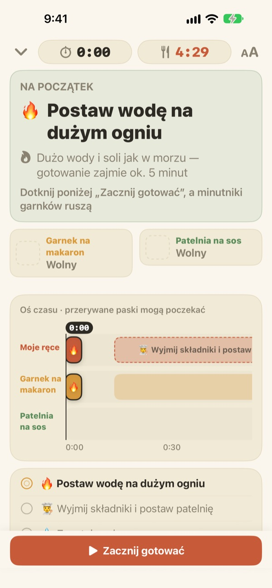
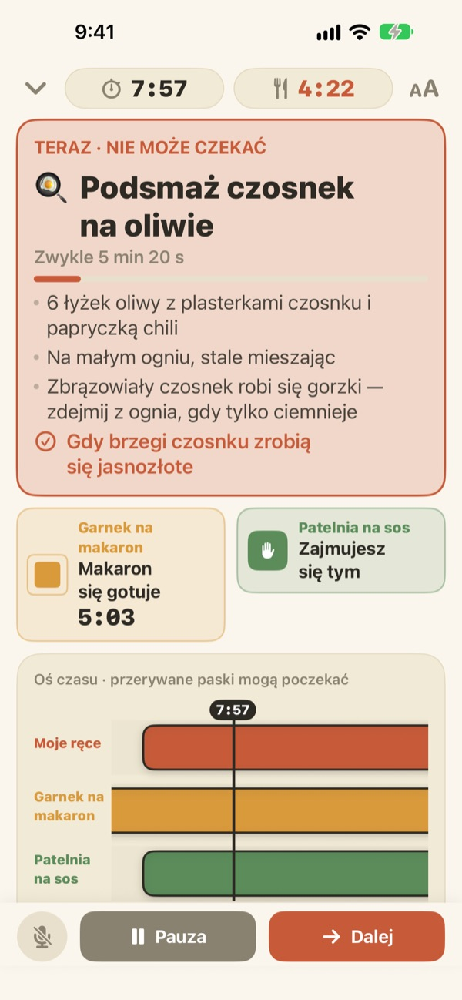
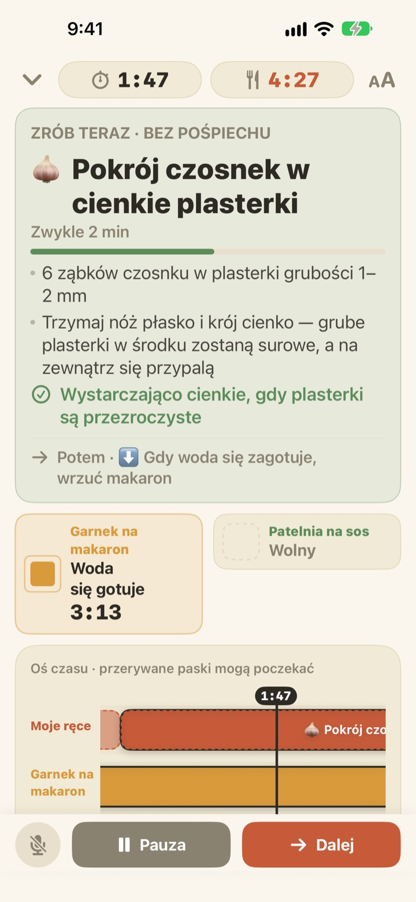
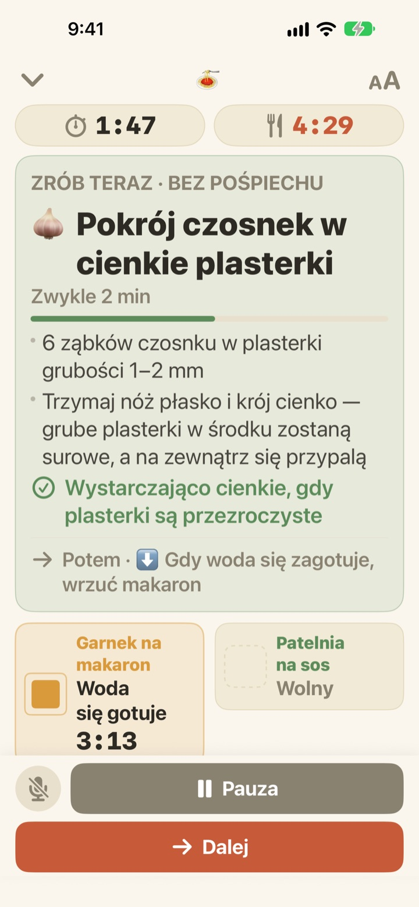

Makaron się gotuje,
a sos jest już gotowy
Gdy dwa garnki idą w różnym tempie, Geusaie pokazuje dużą czcionką jedną rzecz, którą twoje ręce mają zrobić teraz. Sos jest planowany wstecz od chwili, gdy makaron trzeba odcedzić.
Wszystkie funkcje są darmowe. Konto nie jest potrzebne.

Wypróbuj
Ugotuj aglio e olio w tempie 20 razy szybszym. Stuknij Zacznij gotować, a potem Dalej za każdym razem, gdy skończyłbyś zadanie. Zobacz, jak zmienia się karta, gdy przychodzi pora odcedzić makaron.
Trzy minutniki, a makaron i tak rozgotowany?
Jeden minutnik na makaron, drugi na sos, czas czosnku w głowie, i po chwili nie wiesz, co jest pierwsze. Akurat kroisz, gdy trzeba odcedzić, a sos dochodzi dwie minuty za późno. Geusaie zna przepis jako „najpierw to, potem tamto”, więc mówi ci tylko jedną rzecz do zrobienia teraz.
Co nie może czekać, robi się czerwone
Odcedzenie makaronu, czosnek o krok od przypalenia: gdy spóźnienie zepsułoby danie, karta zmienia kolor na terakotowy i każe odłożyć krojenie na bok.
Gdy garnek jest gotowy, dostajesz powiadomienie, nawet jeśli nie patrzysz na ekran, razem z tym, co trzeba zrobić od razu.

Krojenie wtedy, gdy masz wolne ręce
Krojenie czosnku, tarcie sera, odmierzanie: nic z tego nie ma ustalonej godziny, więc aplikacja nie odlicza tu sekund. Pasek wypełnia się, gdy masz wolne ręce, zatrzymuje się, gdy woła garnek, i rusza dalej od tego samego miejsca.
Włączysz palnik trzy minuty później? Wszystko dalej przesunie się o trzy minuty. Plan jest za każdym razem liczony od nowa na podstawie tego, co naprawdę zrobiłeś.

Postaw przy kuchence, dalej idź głosem
Cztery rozmiary tekstu, żeby czytać z kroku czy dwóch, a ekran nie gaśnie, gdy gotujesz.
Mokre ręce? Powiedz dalej, a aplikacja przejdzie do następnego zadania bez dotykania.

Trzy kroki do obiadu
- 1
Wybierz danie
Widzisz, ile mniej więcej potrwa i ile garnków potrzeba.
- 2
Stuknij Zacznij gotować
Najpierw pokaże pierwsze zadanie, a zegary garnków ruszą w chwili stuknięcia.
- 3
Gotowe? Dalej.
Stuknij przycisk albo powiedz „dalej”, a pojawi się następne zadanie.
Kolor mówi, jak bardzo to pilne
- Zielony
- Przygotowanie. Bez pośpiechu.
- Musztardowy
- Czas na garnek. Zrób to teraz, ale spokojnie.
- Terakotowy
- Jeśli zaczekasz, makaron się rozgotuje albo czosnek przypali. Teraz.
- Pola garnków
- Kurczący się kwadrat to pozostały czas. Czas garnków nigdy nie jest ukryty.
Na osi czasu przerywane paski oznaczają zadania, które mogą poczekać.
Wszystkie funkcje są darmowe
Za darmo
- Oba przepisy
- Osobny minutnik dla każdego garnka i cała oś czasu
- Powiadomienie, gdy garnek jest gotowy
- „Dalej” głosem
- Cztery rozmiary tekstu
- Otwieranie przepisu przez Siri lub Skróty
Wesprzyj twórcę (dobrowolnie)
- Jeśli aplikacja ci pomaga, możesz w Ustawieniach zostawić mały napiwek
- Napiwek niczego nie odblokowuje. Bez niego wszystkie funkcje i tak są twoje
Jednorazowe napiwki, nie subskrypcja.
Bez konta, bez reklam i działa bez internetu.
Częste pytania
Mówię „dalej”, ale nic się nie dzieje.
Przycisk mikrofonu w lewym dolnym rogu jest czerwony, gdy aplikacja słucha, i szary, gdy jest wyłączony. Za pierwszym razem pozwól na dostęp do mikrofonu i rozpoznawania mowy; jeśli odmówiłeś, włącz je ponownie w Ustawienia > Geusaie. Aplikacja słucha słowa napisanego na przycisku Dalej. W bardzo głośnej kuchni po prostu stuknij Dalej.
Garnek jest gotowy, ale nie przyszło powiadomienie.
Sprawdź, czy powiadomienia są włączone w Ustawienia > Powiadomienia > Geusaie. Tryb skupienia może je wyciszać. Powiadomienia przychodzą tylko wtedy, gdy garnek jest gotowy; przygotowanie nigdy cię nie pogania.
Co z planem, jeśli zacznę później?
Zostanie przeliczony na podstawie tego, co naprawdę zrobiłeś. Włączysz palnik trzy minuty później, a wszystko dalej przesunie się o trzy minuty; sos pozostanie zaplanowany wstecz od chwili, gdy makaron będzie gotowy.
Tekst jest za mały.
Na ekranie gotowania stuknij w prawym górnym rogu przycisk rozmiaru tekstu i wybierz Normalny, Duży, Większy lub Największy. Wybór zostanie zapamiętany.
Czy ekran gaśnie podczas gotowania?
Nie. Podczas gotowania ekran pozostaje włączony, więc nie musisz go dotykać mokrymi rękami.
Jakie dania są w aplikacji?
Aglio e olio (około 15 minut, 2 garnki) i makaron w sosie pomidorowo-śmietanowym (około 20 minut, 2 garnki), na podstawie przepisów z Serious Eats, Gimme Some Oven, RecipeTin Eats i The Burnt Butter Table. Pasuje każde danie, w którym dwa garnki pracują naraz, więc napisz, jaki przepis chcesz zobaczyć.
Czy mój głos jest nagrywany?
Nie. Aplikacja słucha tylko słowa „dalej” i niczego nie nagrywa ani nie zapisuje. Jeśli urządzenie to obsługuje, rozpoznawanie odbywa się na urządzeniu. Nie są zbierane żadne dane osobowe.
Czy mogę otworzyć ją przez Siri?
Tak. Wybierz danie w Siri lub w aplikacji Skróty, a od razu otworzy się jego ekran gotowania. Zegary ruszą, gdy będziesz gotowy nastawić wodę i stukniesz Zacznij gotować.
Na jakich urządzeniach działa?
Na iPhonie i iPadzie z iOS 17 lub nowszym. Konto ani internet nie są potrzebne.
Jak zgłosić problem lub zaproponować przepis?
W aplikacji przez Ustawienia > Wyślij opinię albo mailowo na adres poniżej. Podaj model urządzenia i wersję iOS, a sprawdzimy to szybciej. Zwykle odpowiadamy w ciągu kilku dni.
Coś nie działa, coś cię zdziwiło albo masz przepis na myśli? Napisz na leeo@kakao.com.